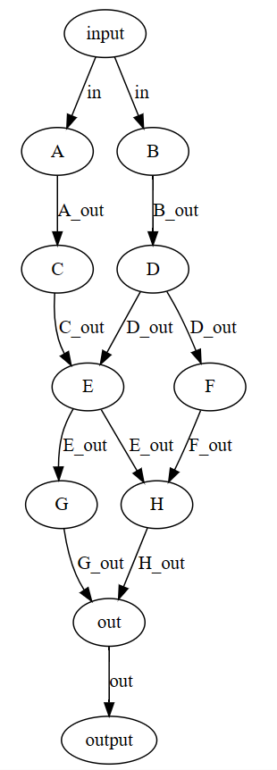
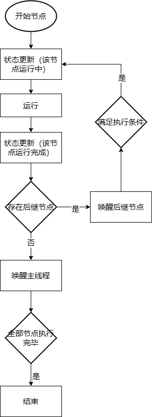
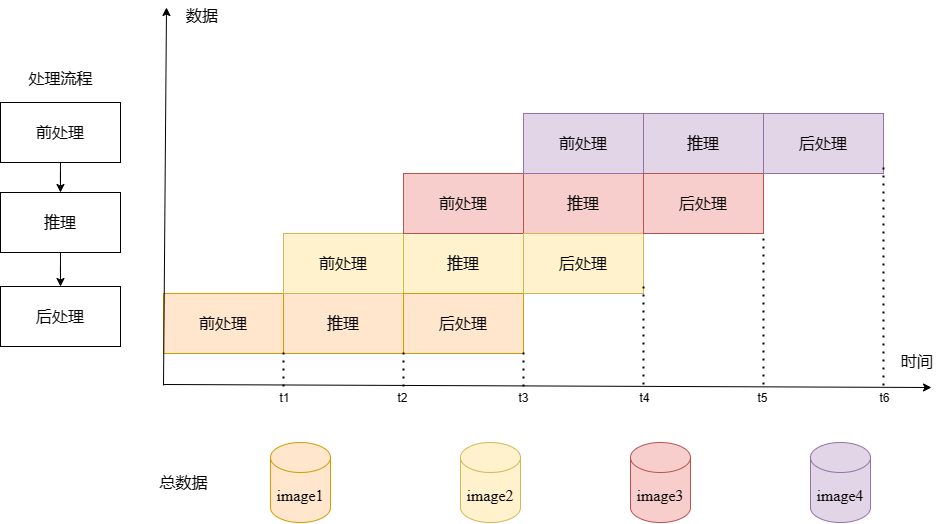
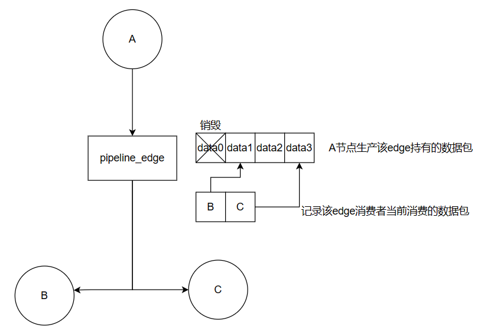

Parallel Mode¶
nndeploy currently supports two parallel modes: task-level parallel and pipeline parallel. The scenarios they are oriented towards are different:
Task-level parallel: In complex scenarios involving multiple models and multiple hardware devices, based on a directed acyclic graph model deployment method, it can fully exploit the parallelism in model deployment, reducing the runtime overhead of a single algorithm’s entire process.
Pipeline parallel: In scenarios involving processing multiple frames, based on a directed acyclic graph model deployment method, it can bind the pre-processing Node, inference Node, and post-processing Node to three different threads, each of which can be bound to different hardware devices, allowing the three Nodes to process in parallel. In complex scenarios involving multiple models and multiple hardware devices, it can leverage the advantages of pipeline parallel more effectively, significantly improving overall throughput.
Task-level parallel¶
Code located at nndeploy/include/nndeploy/dag/executor/parallel_task_executor.h
Task-level parallel utilizes the parallelism within the model’s internal nodes, scheduling multiple nodes to execute simultaneously in multiple threads. Assuming there is a directed acyclic graph with 9 nodes, its topological structure is as follows, where edges represent the flow of data, and the two nodes connected by an edge have a producer-consumer dependency relationship. The consumer node can only run after the producer node has finished running. For example, node E needs to wait for nodes C and D to finish running before it can run.

Starting from the initial input. Once the input data is ready, nodes A and B can run in parallel. After node A finishes running, node C can run, and similarly, after node B finishes running, node D can run. From the graph, it seems that nodes C and D are also parallel. However, in actual operation, due to the unknown runtime of nodes A and B, nodes C and D may not necessarily run in parallel. It’s possible that after nodes A and C have finished running, node B is still running. This issue of unknown runtime makes it impossible to determine at compile time which nodes are parallel, making it very difficult to statically establish a graph node parallel computation method.
The method adopted by nndeploy is dynamic graph solving at runtime, determining whether its consumer nodes can execute after each node’s computation is completed. The main process is as follows:
1.初始化
Initialize the thread pool;
Perform topological sorting on the graph, return the sorted graph after removing dead nodes, and record the total number of task nodes;
2.运行
The full graph execution process is as follows:

Starting from the initial node (with an in-degree of 0, i.e., nodes without dependencies). Change the node state to running, then submit the node’s execution function and post-execution processing function to the thread pool, starting execution asynchronously. The node’s execution function is implemented by the user, and the post-execution processing function is added by nndeploy.
The post-execution processing function includes three parts: node state update, submission of subsequent nodes, and awakening the main thread.
Node state update changes the node’s state to finished.
Submission of subsequent nodes will traverse each subsequent node of the node, check if all predecessor nodes of the subsequent node have finished running, and if so, submit the subsequent node to the thread pool. For example, for node E in the above graph, its subsequent nodes are G and H. Check if all predecessors of node G, i.e., node E, have finished running. If finished, add to the thread pool. Check if all predecessor nodes of node H, E and F, have finished running. If finished, add to the thread pool. If node F has not finished running, node H will check again after node F has finished running whether it can submit for execution. This ensures all nodes can be submitted for execution.
If the node is a tail node (with an out-degree of 0, i.e., nodes without subsequent nodes), check if the number of completed nodes reaches all nodes. If so, awaken the main thread, and all nodes have finished running.
3.运行后处理
Reset all nodes’ execution state to not run, ready for the next full graph execution.
Pipeline parallel¶
Code located at nndeploy/include/nndeploy/dag/executor/parallel_pipeline_executor.h
Pipeline parallel is a parallel computing model based on the pipeline concept, mainly used to solve the parallel execution problems of computation-intensive tasks, such as image processing, video codec, machine learning, etc. Its oriented scenario is multi-batch input data. The principle of pipeline parallel is to break down a large computation task into several smaller subtasks, then assign these subtasks to different computation units for simultaneous execution. Each computation unit is only responsible for executing one subtask, and after completion, passes the result to the next computation unit, and so on, until all subtasks are executed and merged into the final result. Its advantage is that it can fully utilize computational resources and improve overall throughput.
In nndeploy, the pre-processing Node, inference Node, and post-processing Node can be bound to three different threads, each of which can be bound to different hardware devices, allowing the three Nodes to process in parallel.
Take the following graph as an example. There are 4 images to process, with linear dependencies among pre-processing, inference, and post-processing. At time t0, the pre-processing node processes the data of image1; at time t1, the pre-processing node processes the data of image2, while the inference node processes the data of image1 completed by pre-processing computation. And so on, each node at the next moment processes the next piece of data completed by the previous node’s computation. The size of each time slice is determined by the node with the longest time consumption, and the time consumption of other nodes is hidden. Assuming inference takes the longest time, when the total amount of data is large enough, the total time consumption approximately equals the total number of images multiplied by the single image inference delay.

The implementation idea of pipeline parallel in nndeploy is as follows:
1.初始化
Perform topological sorting on the graph, return the sorted graph after removing dead nodes.
Initialize the thread pool, with the number of threads equal to the number of effective nodes.
2.运行
The overall process is that each node starts running after all its predecessor nodes have completed computation, and after finishing this run, it obtains new data to continue running.
There are two key designs here: one is when a node starts running, and the other is when a node ends running.
When a node starts running: When the running speed of the node is less than that of its predecessor node, the data generated by the predecessor node can basically satisfy the running of the node. Otherwise, the node needs to wait for the predecessor node to complete the calculation. In the pipeline parallelism, the data flow between nodes is controlled by PipelineEdge. Each PipelineEdge may have multiple consumer nodes, and different consumer nodes may consume data at different speeds. Therefore, PipelineEdge maintains two key data containers. One data container is a list of data packets, recording all data packets that will still be consumed by consumers. The other is a map of

When a node ends running:
When all data has been consumed and all results have been calculated, it is necessary to terminate all node threads. The relationship between the main thread and the node threads is as shown in the following figure. The main thread performs synchronization at the step of obtaining results, ensuring that all data results are returned before performing the deinitialization operation, sending a stop signal to each node thread.
Thread relationship
3.反初始化
Send stop signals to all node threads in the thread pool to terminate the operation.
Destroy the thread pool.